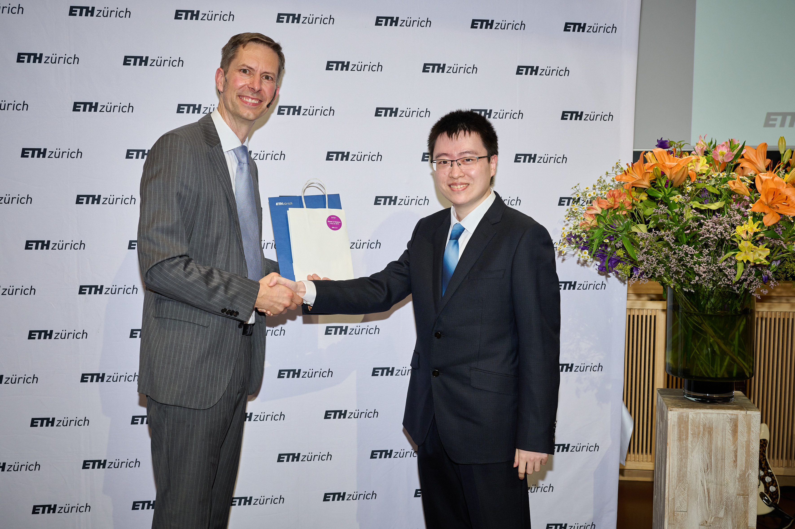

ABOUT ME
Hi, I'm Zhexin (Tony) Wu. I am currently a doctoral student at the Department of Mathematics (D-MATH) at ETH Zürich. My research focuses on optimal execution, market microstructure, and reinforcement learning, with broader interests in quantitative finance, machine learning and optimization. I am supervised by Prof. Patrick Cheridito and work closely with Prof. Jean-Loup Dupret. I have also passed Level II of the CFA Program.
Before starting my doctorate, I obtained an MSc in Management, Technology and Economics (MTEC) at ETH Zürich, where I developed my focus on quantitative finance. Prior to this, I obtained an MSc with distinction from the Department of Information Technology and Electrical Engineering (D-ITET) at ETH Zürich, specializing in Signal Processing and Machine Learning. My MSc thesis on machine-learning methods for MR image reconstruction was supervised by Dr. Valery Vishnevskiy and Prof. Sebastian Kozerke.
Before joining ETH Zürich, I spent a year as an MS student in the Department of Electrical and Computer Engineering (ECE) at the University of Michigan – Ann Arbor, where I worked with Prof. Qing Qu on optimization and machine learning.